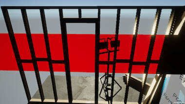
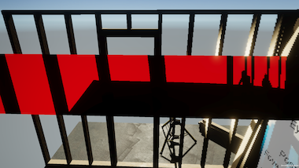

Foveated rendering
Foveated rendering is an optimization technique in which the areas of the display at the periphery of the user’s vision are rendered at a lower resolution. Foveated rendering can improve rendering performance with little impact on perceived visual quality.
Foveated rendering gets its name from the fovea, which is a small portion of the eye containing the densest group of photoreceptor nerves. The goal of foveated rendering is to vary the rendering resolution across the screen so that only the part that can be perceived by the fovea is rendered at the highest resolution.
XR platforms implement foveated rendering with a variety of techniques, such as Variable Rate Shading (VRS) and Variable Rate RasterizationThe process of generating an image by calculating pixels for each polygon or triangle in the geometry. This is an alternative to ray tracing.
See in Glossary (VRR). The technique used can change how shaders must sample textures when foveated rendering is active. To allow assets to work on any platform, Unity provides shaderA program that runs on the GPU. More info
See in Glossary macros, keywords, and pre-processor symbols that you can use to adapt shaders so that screen-space calculations produce correct results on all platforms. Refer to Foveated rendering shaders for information on how to use them. (Shaders provided by Unity and URP already use these macros.)
XR devices can support foveated rendering in one of two modes:
- Fixed foveated rendering renders the central area of the display for each eye at the highest resolution and lowers the resolution of the periphery.
- Gaze-based foveated rendering uses eye tracking to determine where the highest resolution area of the screen is located. This form of foveated rendering can only be supported on devices with eye tracking.
Currently, the XRAn umbrella term encompassing Virtual Reality (VR), Augmented Reality (AR) and Mixed Reality (MR) applications. Devices supporting these forms of interactive applications can be referred to as XR devices. More info
See in Glossary platforms that use VRSVirtual Reality More info
See in Glossary and a uniform raster for foveated rendering, include OpenXR and Meta Quest. The XR platforms that use VRR and a non-uniform raster for foveated rendering, include visionOS (when rendering with the Metal graphics API).
Prerequisites
To use foveated rendering, your project must meet the following prerequisites:
- 2022.3+.
- Universal Render PipelineA series of operations that take the contents of a Scene, and displays them on a screen. Unity lets you choose from pre-built render pipelines, or write your own. More info
See in Glossary (URP). - Settings configured in the XR provider plug-inA set of code created outside of Unity that creates functionality in Unity. There are two kinds of plug-ins you can use in Unity: Managed plug-ins (managed .NET assemblies created with tools like Visual Studio) and Native plug-ins (platform-specific native code libraries). More info
See in Glossary, if necessary. - On PC standalone XR, the project must use the Direct3D12 or Vulkan graphics APIs.
- On PC standalone XR, the computer running the app must have a recent GPU (such as Nvidia RTX2000+ or AMD RX6000+).
- On standalone XR platforms, both the XR provider plug-in and the device must support foveated rendering. (Refer to your provider plug-in documentation for more information.)
Notes:
- Some XR provider plug-ins support foveated rendering on 2022.3 and the Built-in Render Pipeline using a different API and implementation. Refer to the plug-in documentation for more information. These plug-ins include OpenXR and Oculus. Unity does not otherwise support foveated rendering in projects using the Built-In Rendering Pipeline.
- Foveated rendering is not compatible with dynamic resolutionA Camera setting that allows you to dynamically scale individual render targets, to reduce workload on the GPU. More info
See in Glossary.
Enable foveated rendering
To enable foveated rendering for a Unity project, go to the XR Plug-in Management section of your Project Settings (menu: Edit > Project Settings). An option to enable the feature appears in the settings section for each plug-in that supports foveated rendering. Refer to the documentation of the XR provider plug-in for information about the available settings.
In addition to enabling the option in settings, you must also set the foveated rendering level at runtime, as described in Control foveated rendering.
Note: XR platforms can provide different levels of control for foveated rendering. For example, when you use Metal rendering on visionOS, fixed foveated rendering is always turned on at full strength when enabled.
Control foveated rendering
Control foveated rendering by setting the foveatedRenderingLevel property of the XRDisplaySubsystem to a value between zero and one. You must enable foveated runtime in your project’s provider plug-in settings or the runtime setting is ignored.
The following example method sets the foveation level:
public void SetFRLevel(XRDisplaySubsystem xrDisplaySubsystem, float strength)
{
xrDisplaySubsystem.foveatedRenderingLevel = strength;
}
If you set the foveated rendering level to zero, foveation is turned off and does not affect rendering.
On devices that support eye-tracked or gaze-based, foveated rendering, you can enable the feature by setting the foveatedRenderingFlags property of the XRDisplaySubsystem:
// xrDisplaySubsystem is the active XRDisplaySystem instance
xrDisplaySubsystem.foveatedRenderingFlags = XRDisplaySubsystem.FoveatedRenderingFlags.GazeAllowed;
You can enable gaze-based foveated rendering by setting the foveatedRenderingFlags property on devices that support it, even if you chose fixed foveated rendering at runtime.
Note: Get the XRDisplaySubsystem from the SubsystemManager:
using System.Collections.Generic;
using UnityEngine;
using UnityEngine.XR;
public class FoveationControl : MonoBehaviour
{
XRDisplaySubsystem xrDisplaySubsystem;
public float strength = 1.0f;
void Start()
{
// Find the XR display subsystem
var xrDisplaySubsystems = new List<XRDisplaySubsystem>();
SubsystemManager.GetSubsystems<XRDisplaySubsystem>(xrDisplaySubsystems);
if (xrDisplaySubsystems.Count < 1)
{
Debug.LogError("No XR display subsystems found.");
return;
}
foreach(var subsystem in xrDisplaySubsystems)
{
if (subsystem.running)
{
xrDisplaySubsystem = subsystem;
break;
}
}
xrDisplaySubsystem.foveatedRenderingFlags = XRDisplaySubsystem.FoveatedRenderingFlags.GazeAllowed;
SetFRLevel();
}
public void SetFRLevel()
{
xrDisplaySubsystem.foveatedRenderingLevel = strength;
}
}
Get foveated rendering capabilities
You can get the foveated rendering capabilities of the current device from the foveatedRenderingCaps property of the SystemInfo object.
FoveatedRenderingCaps caps = SystemInfo.foveatedRenderingCaps;
If the property reports the FoveatedRenderingCaps.None, then the device does not support foveated rendering. Lack of support could be caused by various reasons, including software, device runtime, or drivers, so even if a platform supports foveated rendering, it might not be available on a particular device.
The other values of FoveatedRenderingCaps, FoveationImage and NonUniformRaster, provide information about the way a device implements foveated rendering and might be useful if you are implementing a custom render pipeline. FoveationImage indicates that the foveated rendering implementation uses VRS, while NonUniformRaster indicates that it uses VRR.
Foveated rendering shaders
Shaders included with the Unity Engine already support both uniform and non-uniform rasterization for foveated rendering. If you have custom shaders that perform screen-space calculations, you might need to update them to support foveated rendering on platforms that use a non-uniform raster technique.
The pixelsThe smallest unit in a computer image. Pixel size depends on your screen resolution. Pixel lighting is calculated at every screen pixel. More info
See in Glossary rendered with a non-uniform raster no longer represent a regular grid, so you must change any screen space calculations that assume a regular grid in order for them to work correctly with VRR. Unity provides shader macros, keywords, and pre-processor symbols that you can use to adapt shaders so that screen-space calculations produce correct results on all platforms. (Shaders provided by Unity and URP already use these macros.)
For example, the left side of the following image, shows a view of a sceneA Scene contains the environments and menus of your game. Think of each unique Scene file as a unique level. In each Scene, you place your environments, obstacles, and decorations, essentially designing and building your game in pieces. More info
See in Glossary rendered with VRR without correcting for the non-uniform rasterization. The right side of the image shows the same view when rendered correctly:
Notice how areas near the edges of the image on the left are squished. This visual compressionA method of storing data that reduces the amount of storage space it requires. See Texture Compression, Animation Compression, Audio Compression, Build Compression.
See in Glossary occurs because the peripheral areas of the texture were rasterized with a lower pixel density. When sampling this texture, you would need to use non-uniform UV coordinates (or convert linear UV coordinates to non-uniform using one of the provided foveated rendering shader functions).
Note: Unity uses the term, “non-uniform raster,” to describe the space the pixels have been rasterized into when using a VRR technique and uses the term, “linear raster,” to refer to the more usual rasterization space with a regular grid.
To update your screen-space shaders for URP to produce correct results under foveated rendering, add the following include files (from the Core RP Library package):
#include_with_pragmas "Packages/com.unity.render-pipelines.core/ShaderLibrary/FoveatedRenderingKeywords.hlsl"
#include "Packages/com.unity.render-pipelines.core/ShaderLibrary/FoveatedRendering.hlsl"
These files contain keywords and macros for foveated rendering, as well as functions to map screen-space coordinates from non-uniform to linear and vice versa.
How foveated rendering affects shader compatibility
The variable rate shading (VRS) techniques change the number of screen pixels shaded by each call to a fragment shader based on where a region is within the user’s field of view. Variable rate shading is compatible with existing shaders. You should not need to alter custom shaders to work under foveated rendering on XR platforms that use VRS.
The variable rate rasterization (VRR) technique adjusts rasterization such that the effective distance between neighboring pixels is no longer uniform. For example, a peripheral region of the field of view might be rendered to a lower resolution texture that is then stretched when composited to the final display. Because rasterization is non-uniform, shaders performing calculations in screen space can produce incorrect results under VRR if they assume that the rasterization uses a uniform grid. You might need to alter custom shaders to work under foveated rendering on XR platforms that use VRR.
When to use foveated rendering functions
When you sample a linear texture, you should use linear coordinates. Conversely, when you sample a non-uniform texture, you should use non-uniform coordinates.
All vertex attributes passed from the vertex shaderA program that runs on each vertex of a 3D model when the model is being rendered. More info
See in Glossary to the fragment (pixel) shader are always in linear space with the exception of SV_POSITION. You can sample a non-uniform texture with the SV_POSITION coordinates directly, but if you use other vertex attributes for sampling, you must use the appropriate linear-to-non-uniform remapping function. Similarly, if you use SV_POSITION to sample a linear texture, you must use the FoveatedRemapNonUniformToLinear function.
The coordinate space of textures varies according to how they are created. Most textures created by the Unity Engine, such as the depth bufferA memory store that holds the z-value depth of each pixel in an image, where the z-value is the depth for each rendered pixel from the projection plane. More info
See in Glossary and G buffers, are in the non-uniform space when rendering with VRR. (However, there are exceptions, which aren’t currently documented.) Manually created screen-space textures, such as a UI(User Interface) Allows a user to interact with your application. Unity currently supports three UI systems. More info
See in Glossary overlay drawn by an artist are normally linear and you should sample them with linear UV coordinates.
In compute shaders, you must consider whether source and destination textures are in linear or non-uniform space and remap coordinates as needed before sampling or writing to them. Likewise, consider the source of UV coordinates, how they might be calculated within the compute shader, and whether any functions they are passed to expect linear or non-uniform coordinates. Refer to the Compute Shaders topic and the ComputeShader API for general information about compute shaders in Unity.
Shader functions for foveated rendering
FoveatedRendering.hlsl defines a set of functions that you can use to support foveated rendering in your custom shaders. These functions return the correct results whether the current foveated rendering type is linear or non-uniform, and when foveated rendering is not being used. The functions also handle inverting the y axis according to whether the platform places the screen space origin at the top or bottom of the screen.
Note: These functions have no performance impact on platforms that don’t employ non-uniform foveated rendering (VRR). You do not need to use conditional #ifdef statements to exclude them. However, on platforms that do use VRR, there is a dynamic branch to check the shader constant that adds a small amount of overhead, even when foveated rendering is disabled.
FoveatedRemapLinearToNonUniform
Declaration: float2 FoveatedRemapLinearToNonUniform(float2 uv)
Converts linear, screen-space UV coordinates to non-uniform, including any necessary y-axis inversion. If foveated rendering is not active or the platform doesn’t use non-uniform rasterization, the function returns the UV coordinates unchanged.
FoveatedRemapNonUniformToLinear
Declaration: float2 FoveatedRemapNonUniformToLinear(float2 uv)
Converts non-uniform screen-space UV coordinates to linear, including any necessary y-axis inversion. If foveated rendering is not active or the platform doesn’t use non-uniform rasterization, the function returns the UV coordinates unchanged.
FoveatedRemapPrevFrameLinearToNonUniform
Declaration: float2 FoveatedRemapPrevFrameLinearToNonUniform(float2 uv)
Remaps linear screen-space UV coordinates based on the previously rendered frame. (Not implemented on Metal.)
FoveatedRemapPrevFrameNonUniformToLinear
Declaration: float2 FoveatedRemapPrevFrameNonUniformToLinear(float2 uv)
Remaps non-uniform screen-space UV coordinates based on the previously rendered frame. (Not implemented on Metal.)
FoveatedRemapDensity
Declaration: float2 FoveatedRemapDensity(float2 uv)
The ratio between the screen resolution and the raster resolution at the specified screen UV coordinate. If foveated rendering is not active or the platform doesn’t use non-uniform rasterization, the function returns (1.0, 1.0). (Not implemented on Metal.)
FoveatedRemapPrevFrameDensity
Declaration: float2 FoveatedRemapPrevFrameDensity(float2 uv)
The density ratio at the time of the previous frame. (Not implemented on Metal.)
FoveatedRemapLinearToNonUniformCS
Declaration: float2 FoveatedRemapLinearToNonUniformCS(float2 positionCS)
Converts linear-space screen coordinates to non-uniform-space screen coordinates. If foveated rendering is not active or the platform doesn’t use non-uniform rasterization, the function returns the coordinates unchanged.
FoveatedRemapNonUniformToLinearCS
Declaration: float2 FoveatedRemapNonUniformToLinearCS(float2 positionCS)
Converts non-uniform-space screen coordinates to linear-space screen coordinates. If foveated rendering is not active or the platform doesn’t use non-uniform rasterization, the function returns the coordinates unchanged.
Convert UV
To convert a UV coordinate in linear screen space to non-uniform raster screen space, use the following:
uvNonUniform = FoveatedRemapLinearToNonUniform(uvLinear);
To convert a UV coordinate in non-uniform raster screen space to linear screen space, use the following:
uvLinear = FoveatedRemapNonUniformToLinear(uvNonUniform);
Update effects
To update effects, such as Gaussian blur, use the following:
uvNonUniform = FoveatedRemapDensity(uvLinear);
Update Shader Graph effects
The Screen Position node in Shader Graph provides coordinates that are often used to sample textures affected by foveated rendering. The Mode setting of this Shader Graph node determines the form in which the coordinates are provided. In most modes, the coordinate space is non-uniform when rendering with VRR. The Raw mode, in contrast, is linear in all cases.
| Screen Position Mode | UV coordinate space | |
|---|---|---|
| Variable Rate Shading (VRS) and non-foveated rendering | Variable Rate Rasterization (VRR) | |
| Default | linear | non-uniform |
| Raw | linear | linear |
| Center | linear | non-uniform |
| Tiled | linear | non-uniform |
| Pixel | linear | non-uniform |
If you use the Screen Position node’s Raw mode to sample a non-uniform texture, then the results will be incorrect.
To illustrate the situation, consider a Shader Graph with a Screen Position node connected to a Scene Depth node which, in turn, is connected to the base color of a fragment shader.
This shader renders colors according to the depth values in the scene depth buffer. This shader works correctly under foveated rendering because it uses the Default mode Screen Position node, which returns its results in the same space as the depth buffer (and most other Engine-created textures). If you changed the mode to Raw, however, the results would no longer be correct when foveated rendering is active on a platform that uses variable rate rasterization.
| Correct versus mismatched sampling | |
|---|---|
|  |  |
| The left image shows the shader on a quadA primitive object that resembles a plane but its edges are only one unit long, it uses only 4 vertices, and the surface is oriented in the XY plane of the local coordinate space. More info See in Glossary and using the correct coordinate space to sample the scene depth buffer. |
The right image shows foveated rendering using the wrong coordinate space for the sampled texture – notice how the sampled texture no longer lines up with the scene geometry. |
If your Shader Graph depends on the Raw screen position and can’t use any of the other modes, you can use the Shader functions for foveated rendering inside a Custom Function node to remap the raw coordinates (which must be normalized):
#include_with_pragmas "Packages/com.unity.render-pipelines.core/ShaderLibrary/FoveatedRenderingKeywords.hlsl"
#include "Packages/com.unity.render-pipelines.core/ShaderLibrary/FoveatedRendering.hlsl"
// The Raw mode screenPosition must first be normalized: position.xy/position.ww
void CorrectedScreenPosition_float(float4 screenPosition, out float2 correctedScreenPosition)
{
correctedScreenPosition = FoveatedRemapLinearToNonUniform(screenPosition);
}
Note: You must create the Custom Function node to reference a file in this case, because if you use the String Type the #include statements would be inside the function body and result in syntax errors.
For example, the following Shader Graph routes the Raw coordinates through two Custom Function nodes:

The first custom function normalizes the raw coordinates by dividing the x and y elements by the w element (B = A.xy/A.ww). The second custom function uses FoveatedRemapLinearToNonUniform to map the linear coordinates to the non-uniform space when required. Recall that when foveated rendering is off or the current platform does not use VRR for foveated rendering, then FoveatedRemapLinearToNonUniform returns the linear coordinates unchanged. Thus the shader samples the scene depth correctly in all situations.